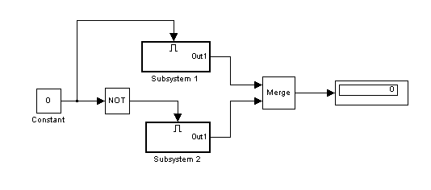
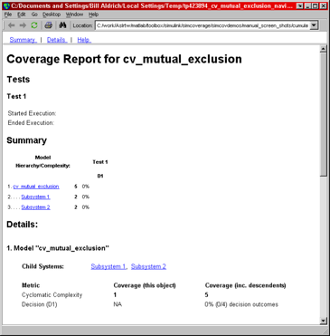

This demonstration shows how to use the overloaded operators +, * and - to combine coverage results into a union, intersection, or set difference of results.
Open a simple model with two mutually-exclusive enabled subsystems.
open_system('cv_mutual_exclusion')
Use the commands cvtest and cvsim to start simulation. Initially, the value of the Constant block is 0, which forces Subsystem 2 to execute.
test1 = cvtest('cv_mutual_exclusion');
data1 = cvsim(test1)
data1 = ... cvdata
id: 220
type: TEST_DATA
test: cvtest object
rootID: 221
checksum: [4x1 struct]
startTime: 04-Sep-2003 18:17:54
stopTime: 04-Sep-2003 18:17:55
metrics: [1x1 struct]
The following commands change the value of the Constant block to 1 before running the second simulation. This forces Subsystem 1 to execute.
set_param('cv_mutual_exclusion/Constant','Value','1'); test2 = cvtest('cv_mutual_exclusion'); data2 = cvsim(test2)
data2 = ... cvdata
id: 259
type: TEST_DATA
test: cvtest object
rootID: 221
checksum: [4x1 struct]
startTime: 04-Sep-2003 18:17:55
stopTime: 04-Sep-2003 18:17:55
metrics: [1x1 struct]
We use the decisioninfo command to extract the overall coverage from each test and list it as a percentage.
Note: While both tests have 50% coverage, whether or not they cover the same 50% is unknown.
cov1 = decisioninfo(data1,'cv_mutual_exclusion'); percent1 = 100*(cov1(1)/cov1(2)) cov2 = decisioninfo(data2,'cv_mutual_exclusion'); percent2 = 100*(cov2(1)/cov2(2))
percent1 =
50
percent2 =
50
Use the + operator to derive a third cvdata object representing the union of data1 and data2 cvdata objects.
Note: New cvdata objects created from combinations of other simulation results are marked with the type property set as DERIVED_DATA.
dataUnion = data1 + data2
dataUnion = ... cvdata
id: 0
type: DERIVED_DATA
test: []
rootID: 221
checksum: [4x1 struct]
startTime: 04-Sep-2003 18:17:54
stopTime: 04-Sep-2003 18:17:55
metrics: [1x1 struct]
Notice that the union of the coverage is 100% because there is no overlap in the coverage between the two sets.
covU = decisioninfo(dataUnion,'cv_mutual_exclusion');
percentU = 100*(covU(1)/covU(2))
percentU = 100
Confirm that the coverage does not overlap between the two tests by intersecting data1 and data2 with the * operator. As expected, there is 0% coverage in the intersection.
dataIntersection = data1 * data2
covI = decisioninfo(dataIntersection,'cv_mutual_exclusion');
percentI = 100*(covI(1)/covI(2))
dataIntersection = ... cvdata
id: 0
type: DERIVED_DATA
test: []
rootID: 221
checksum: [4x1 struct]
startTime: 04-Sep-2003 18:17:54
stopTime: 04-Sep-2003 18:17:55
metrics: [1x1 struct]
percentI =
0
Derived cvdata objects can be used in all reporting and analysis commands, and as inputs to subsequent operations. As an example, generate a coverage report from the derived dataIntersection object.
cvhtml('intersect_cov', dataIntersection); % Input to another operation newUnion = dataUnion + dataIntersection
newUnion = ... cvdata
id: 0
type: DERIVED_DATA
test: []
rootID: 221
checksum: [4x1 struct]
startTime: 04-Sep-2003 18:17:54
stopTime: 04-Sep-2003 18:17:55
metrics: [1x1 struct]
The - operator is used to form a cvdata object that represents the set difference between left and right operands. The result of the operation contains the coverage points that are satisfied in the left operand but not satisfied in the right operand. This operation is useful for determining how much additional coverage is attributed to a particular test.
In the following example, the difference between the union of the first and second test coverage and the first test coverage should indicate how much additional coverage the second test provided. As already shown, since none of the coverage points overlapped, the new coverage from test 2 is 50%.
newCov2 = dataUnion - data1
covN = decisioninfo(newCov2,'cv_mutual_exclusion');
percentN = 100*(covN(1)/covN(2))
newCov2 = ... cvdata
id: 0
type: DERIVED_DATA
test: []
rootID: 221
checksum: [4x1 struct]
startTime: 04-Sep-2003 18:17:54
stopTime: 04-Sep-2003 18:17:55
metrics: [1x1 struct]
percentN =
50
Finish the demo by closing the model.
close_system('cv_mutual_exclusion',0);